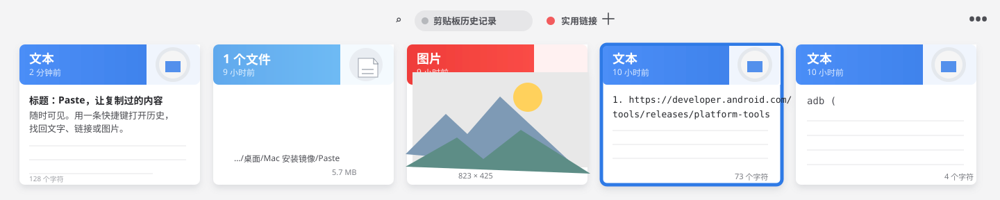
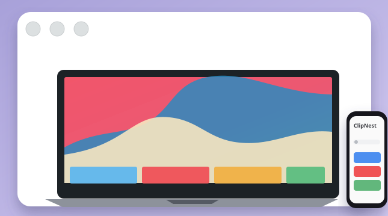
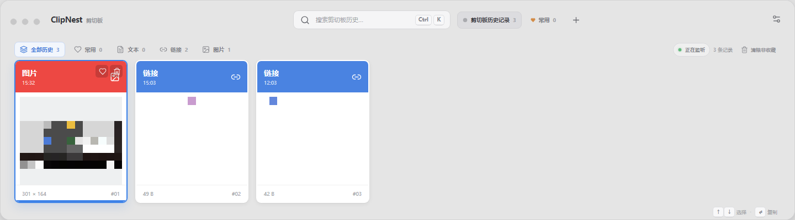

01TEXT
文字，清楚可读
长文、代码、临时笔记都保留原始内容，卡片直接预览，不必反复切换窗口。
WINDOWS CLIPBOARD HISTORY
ClipNest 把你复制过的文本、链接和图片整理成一条清晰的时间线。 按下一个快捷键，找到它，再粘贴回正在工作的地方；常用内容还能被保护下来。需要时，在配置页接入自己的云端服务并检查版本更新。

SMALL TOOL, BIG RELIEF
长文、代码、临时笔记都保留原始内容，卡片直接预览，不必反复切换窗口。
复制过的截图和图片保留缩略图，在视觉卡片流里快速定位，然后原格式粘贴。
在配置页调整 Windows 开机自启、历史保存位置、最大保存数量和版本升级；标记为常用的剪切内容跳过自动清理，长列表使用虚拟滚动保持流畅。
历史先在本地使用 AES-256-GCM 加密，再按项目令牌同步；服务端只保存密文，不同项目目录彼此隔离。
ONE SHORTCUT AWAY
不需要记住内容复制在哪里，也不需要在多个窗口之间来回找。
DESIGNED FOR FLOW
浅灰工作台、横向卡片流、蓝色选择描边和清晰的类型色，让历史内容既有秩序又有温度。
在 README 查看设计说明 ↗
OPTIONAL CLOUD STORAGE
云端不是默认开启的。你可以在配置页填写自己的服务地址、项目标识和令牌；ClipNest 先在本地加密，再上传快照。
查看云端配置文档 ↗默认关闭，历史可以始终只留在本机。
令牌只用于项目鉴权，服务端保存哈希。
配置页可立即同步，也能检查 Release 更新并一键升级。
VERIFIED ON WINDOWS
这张截图来自打包后的 Windows 程序：底部抽屉宽度占满当前屏幕，历史卡片保持单行平铺。剪切内容已模糊，仅展示界面与布局。

READY WHEN YOU ARE
v1.1.3 · Windows x64 · ZIP 免安装 · 配置页 · 云端加密 · 一键升级